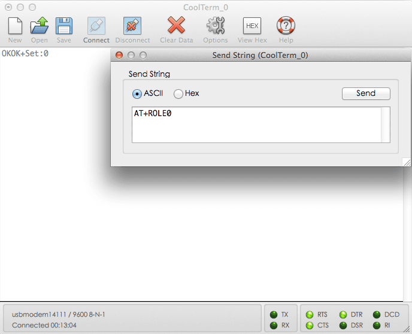

The BLE Bee is a Bluetooth Smart enabled XBEE form factor module based on HM-11 module. The BLE Bee can be used in hardware setups, where normally an XBEE module is used. Using a BLE Bee an XBee socket enabled embedded system can communicate with desktop computers, smartphones, table computers and even other embedded systems providing Bluetooth Smart aka Bluetooth Low Energy (BLE).
Prototype version:
Note: BLE Bee
| Specification | Value |
|---|---|
| Microprocessor | CC2540 |
| Resources | Support the AT command, the user can according to need to change the role (master, slave mode) and the serial port baud rate,name of equipment,Matching parameters such as password, the use of flexible. |
| PCB size | 24.5mmx30.5mmx0.8mm |
| Outline Dimension | 24.5mmx30.5mmx9.77mm |
| Power supply | 3.3V |
| Communication Protocol | Uart(TTL) |
| IO counts | 2 |
| Key input IO | 1 |
| LED Indicators IO | 1 |
| Connectivity | Socket compatible with XBee |
| Specification | Min | Typ | Max | Unit |
|---|---|---|---|---|
| Max Input Voltage | -0.3 | 3.6 | V | |
| Working Input Voltage | 2.0 | 3.3 | 3.6 | V |
| Transmit Current | 15 | mA | ||
| Receive Current | 8.5 | mA | ||
| Deep Sleep Current | 600 | uA | ||
| Operating Temperature | -40 | 125 | °C |

Note: Only important alternate functions are listed, may have more, please refer to datasheet.
1） Query the native MAC address
Send: AT + ADDR?
Send after a successful return: OK + LADD: MAC address (address for 12 string)
2） Query the baud rate
Send: AT+BAUD?
Send after a successful return: OK + Get: [para1]
Scope of para1:0 ~ 8. The parameters corresponding to: 0 represents 9600, 1, 2, 9600, 38400, on behalf of the representative representative of 57600, 115200, 5, 4800, 6, 7 represents 1200, 1200 2400. The default baud rate to 9600.
3） Set the baud rate
Send: AT+BAUD[para1]
Send after a successful return: OK+Set:[para1]
Example: send: AT + BAUD1, return: OK + Set: 2.The baud rate is set to 19200.
Note: after the switch to the 1200, module will no longer support the configurations of the AT command, and press the PIO0 under standby, module can restore the factory Settings.Do not recommend using the baud rate.After setting the baud rate, modules should be on electricity, anew set parameters can take effect.
4） from the device connected to the bluetooth address specified
Send: AT+CON[para1]
Send after a successful return: OK+CONN[para2]
Para2 range is: A, E, F
Example: from the bluetooth address is: 0017EA0943AE, sending the AT + CON0017EA0943AE, module returns: OK + CONNA or OK + + CONNF CONNE or OK.
5） removal equipment matching information
Send: AT + CLEAR
Send after a successful return: OK + CLEAR
Clear success had connected device address code information.
6） query module working mode
Send: AT + MODE?
Send after a successful return: OK + Get: [para]
Para: the range of 0 ~ 2. 0 represents passthrough mode, on behalf of the PIO acquisition + remote control + 1 passthrough, 2 representative passthrough + remote control mode.The default is 0.
7） set module working mode:
Send: AT + MODE []
Send after a successful return: OK + Set: [para]
8） query device name
Send: AT + NAME?
Send after a successful return: OK + NAME [para1]
9） set the device name
Send: AT + NAME [para1]
Send after a successful return: OK + Set: [para1]
Example: Set the device name to Seeed, sending the AT + NAMESeeed, return OK + Set: Seeed AT this time, the name of the bluetooth module has been changed to Seeed.
Note: after the instruction execution, required to electricity, set the parameters of the approval.
10） query matching password
Send: AT + PASS?
Send after a successful return: OK + PASS: [para1]
Para1 range is 000000 ~ 999999, the default is 000000.
11） pairing set password
Send the AT + PASS [para1]
Send after a successful return: OK + Set: [para1]
12） restore factory Settings
The AT + RENEW send
Send after a successful return: OK + RENEW
Restore the default factory Settings module, the module Settings will be reset so, back to the factory with the status of the factory default, delay module 500 ms after the restart.If no need, please be careful.
13） module reset
Send: AT + RESET
Send after a successful return: OK + RESET
After the instruction execution module will delay 500 ms after the restart.
14） set the master-slave mode
Send: AT + ROLE [para1]
Send after a successful return: OK + Set: [para1]
More information about the AT Commands please refer to the data sheet of BLE module. You can download it from the Resource space.
BLE Bee can be acted as a master or slave, you can use the one via different demos.If you are going to use the following SoftwareSerial program, please refer to the way of connection in the previous pic. BLE_TX-->D2, BLE_RX-->D3.
Open Arduino IDE, copy the following program and upload it onto the Arduino/Seeeduino board. And then two BLE Shields can communicate with each other.
Demo : BLE Slave
#include <SoftwareSerial.h> //Software Serial Port
#define RxD 2
#define TxD 3
#define DEBUG_ENABLED 1
SoftwareSerial BLE(RxD,TxD);
void setup()
{
Serial.begin(9600);
pinMode(RxD, INPUT);
pinMode(TxD, OUTPUT);
setupBleConnection();
}
void loop()
{
char recvChar;
while(1){
if(BLE.available()){//check if there's any data sent from the remote BLE shield
recvChar = BLE.read();
Serial.print(recvChar);
}
if(Serial.available()){//check if there's any data sent from the local serial terminal, you can add the other applications here
recvChar = Serial.read();
BLE.print(recvChar);
}
}
}
void setupBleConnection()
{
BLE.begin(9600); //Set BLE BaudRate to default baud rate 9600
BLE.print("AT+CLEAR"); //clear all previous setting
BLE.print("AT+ROLE0"); //set the bluetooth name as a slaver
BLE.print("AT+SAVE1"); //don't save the connect information
}
Demo : BLE Master
#include <SoftwareSerial.h> //Software Serial Port
#define RxD 2
#define TxD 3
#define DEBUG_ENABLED 1
SoftwareSerial BLE(RxD,TxD);
void setup()
{
Serial.begin(9600);
pinMode(RxD, INPUT);
pinMode(TxD, OUTPUT);
setupBleConnection();
}
void loop()
{
char recvChar;
while(1){
if(BLE.available()){//check if there's any data sent from the remote BLE shield
recvChar = BLE.read();
Serial.print(recvChar);
}
if(Serial.available()){//check if there's any data sent from the local serial terminal, you can add the other applications here
recvChar = Serial.read();
BLE.print(recvChar);
}
}
}
void setupBleConnection()
{
BLE.begin(9600); //Set BLE BaudRate to default baud rate 9600
BLE.print("AT+CLEAR"); //clear all previous setting
BLE.print("AT+ROLE1"); //set the bluetooth name as a master
BLE.print("AT+SAVE1"); //don't save the connect information
}
Besides, you can use BLE Shield via AT commands without any program, but you need to change the positions of two jumpers. BLE_TX-->D1, BLE_RX-->D0.
Then open a Serial Port Tool, like CoolTerm or others.The following are some settings : Baudrate: 9600(default) , Data Bits: 8, Parity: none, Stop Bits: 1.
First, you can send a(some) "AT" command(s) to BLE Shield to have a test. If it returns an "OK", then you can do the following steps. If not, you can upload a blank program to Arduino/Seeeduino, and see whether you can get response from Serial Port Tool via the previous operation.
void setup()
{
}
void loop()
{
}
Then, send an "AT+ROLE0" command to BLE Shield; it will return an "OK+Set:0", which means now the BLE Shield is ready to act as a slave.

Schematic of BLE_Bee_v1.0
BLE_apk_for_Android
DataSheet of BLE module